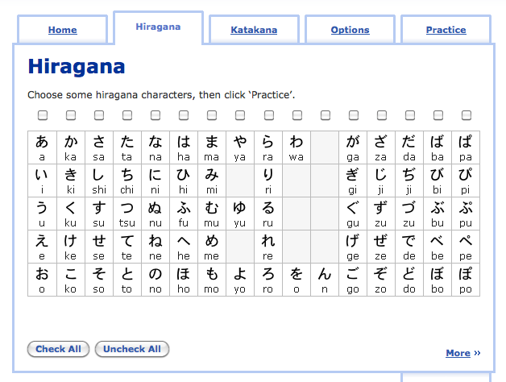
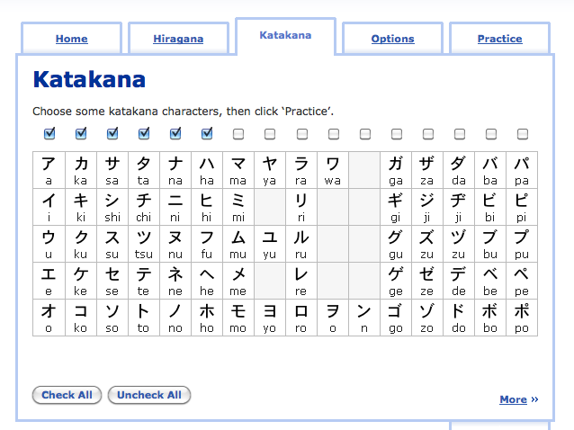
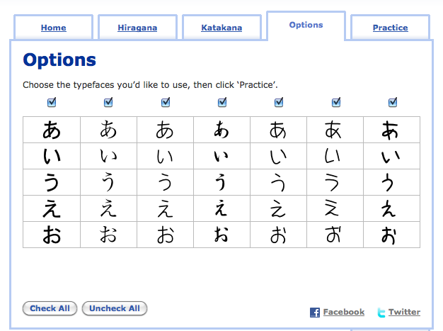
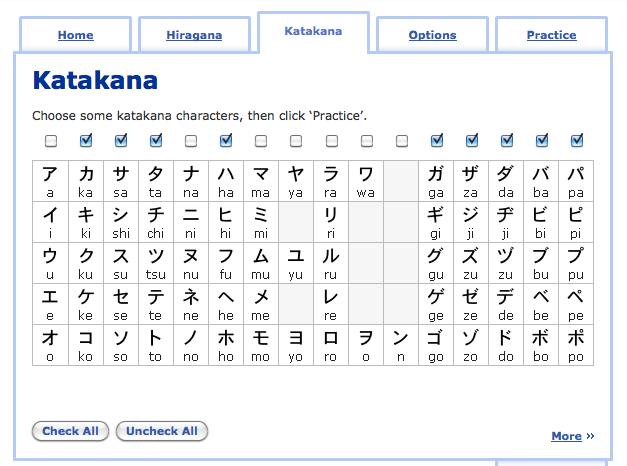

How To Learn Katakana
“Life is like a combination lock; your job is to find the right numbers, in the right order, so you can have everything you want.” - Brian Tracy
Learning katakana is going to be easier than hiragana, though it’s still going to take a little time (possibly a long time) to learn, just because you don’t see it as much and therefore don’t get to practice it as much. Despite that, it’s still important to learn, and is kind of fun, too, once you get the hang of things. First thing’s first. Download the katakana chart so you have it on hand.
Now, since you’ve already learned hiragana, I think it’s safe to assume you don’t need quite as much hand holding as last time. I’ll still provide to you a step by step method to learn katakana – just be sure you pace yourself, study extra when you need extra study, and do what you need to do to make things happen. Let’s get started.
First 10 Katakana: アイウエオ、カキクケコ
1.First, download this “Personal Kana Sheet”, and if you have a printer, print it out (if you don’t, you can just make your own version of this on a blank piece of paper). Start off by writing the first ten katakana characters, copying them from your katakana chart (the one you just downloaded). You won’t remember all of them just by doing this, but chances are you’ll be able to recognize a couple of them from writing them down once. Pinpoint two or three katakana characters to try and be able to recognize before moving on. This is just to jump start your way into the Anki list, which is in the next step.
2. Now it’s time to head back to our friend Anki. Download the Katakana deck and get started. You’ll want to study up until the katakana character コ. After you go through to コ, head on over to the next step to solidify things. Make sure you are honest with yourself when you are answering the questions on Anki!
Katakana List on Anki
3. Now it’s time to see if you actually recognize the kana you just learned. Head on over to Drag n’ Drop Katakana and complete the two columns you learned (ア column and カ column). The tricky part will be to find the kana you know amongst all the kana you don’t yet know. See if you can do it (without cheating) under one minute. Once you’re able to complete the first ten katakana in the drag n’ drop game (in under a minute), move on to the next section.
Katakana 11-20: サシスセソ、タチツテト
1. Write the next ten katakana characters (サシスセソ、タチツテト) out on your Personal Kana Sheet below the first ten you wrote down. Pick out three or four characters you didn’t know before, and try to memorize them right now, really quickly. All you have to be able to do is recognize them.
2. Head back to your Katakana list on Anki and complete the next ten katakana. Stop when you get to ト and then move on to the next step. You should be able to recognize 50-70% of the first 20 katakana now.
3. Head back to the Drag n’ Drop Katakana page. Try to complete the twenty katakana characters you’ve learned in under one and a half minutes. If that’s too easy, challenge yourself to get that number down to under a minute. The better you do here now, the better you’ll be doing later on. Remember, you’re learning because you want to learn, so you might as well challenge yourself and see how well you can do!
4. Lastly, I cooked up a worksheet for you to use so you can practice reading katakana. I think it’s going to be pretty difficult at first, but work through it – after you finish, you’ll surely be better at katakana than when you started it. Feel free to do it multiple times, too, if you’re still feeling too uncomfortable with it. Here’s a hint that will help. There’s a couple of difficult katakana characters that look really similar. They are シ (し) and ツ (つ). The difference between them is that シ (し) has its two lines more horizontal. ツ (つ) on the other hand, has its two lines vertical. Especially when writing it out by hand, you can exaggerate the horizontal and verticalness of each to make it easier to tell them apart. I think this worksheet will help you to tell / learn the difference between them too. Just remember, し sound is horizontal, つ sound is vertical.
After you’ve completed the worksheet, move on to the next ten katakana characters.
Katakana 21-30: ナニヌネノ、ハヒフヘホ
1. As always, write down the next ten katakana characters on your Personal Katakana Sheet, right below the last 20. You should have 30 katakana characters written down, and you should know twenty of them (soon 30!). Pick out a few new katakana characters to cram in the next minute before studying them on the Anki list (then move on to the Anki list!).
2. Start up Anki and complete the next ten katakana characters. Stop at ホ and then move on to the next step.
3. Let’s solidify that. Now you’re going to use RealKana. You’ve used this to help with your hiragana, but now it’s time to do katakana. A few settings you should look out for:
Make sure you go to the “hiragana” tab and uncheck anything that’s checked there

In the katakana tab, check the first 30 katakana (i.e. the ones you’ve gone over so far)

Click on “Options” – It’s always a good idea to view these in different “styles.” Just like in English, there are different fonts and writing styles that will slightly change things from time to time.

Go through and use RealKana until you feel pretty comfortable with most of the things it is throwing at you. The different “font styles” may throw you for a bit, but it’s good to get used to them now so you don’t have to worry about them later. I’d recommend spending 5 minutes using RealKana, then stopping (we’ll do it again in just a minute – it’s good for you to take a break). While you’re stopping, go through the worksheet, below.
4. I’ve made another worksheet – it’s pretty similar to the last one, but this time it should be easier for you (in theory!).
5. Go back to RealKana and spend another five minutes practicing the first 30 katakana characters. With a break, I think you’ll find yourself remembering the kana a little more effectively this time around. That’s the goal, at least!
Katakana 31-46: マミムメモ、ヤユヨ、ラリルレロ、ワヲ、ン
This is the last “main” set. With this, you’ll be able to read and write all the core katakana – everything after this should be a breeze (or at least a lot easier, since it’s just dakuten and combo katakana).
1. Write the rest of the main katakana down on your personal katakana sheet. You should have the whole left side filled up now! Once again, cram and learn to be able to recognize 3-5 of them before actually studying them in the next step.
2. Finish off the main katakana on Anki, and stop at ン. After you’re done, move on to the next step.
3. In RealKana, check all the katakana you’ve learned up to this point and study this for 5-10 minutes.
4. Open up Katakana Drag n’ Drop. You should know all the katakana here, so you should be able to finish the game now! Try to finish it in under three minutes. Once you get under three minutes, you should be pretty comfortable. If you’re really good at katakana, you can probably make it under two minutes, but that might be pushing it a bit right now.
5. Open up RealKana one more time. Spend another 5-10 minutes practicing. At this point, you should hopefully feel pretty good about a lot of the katakana. If not, don’t worry – sometimes it takes a while. Keep studying using the above resources and worksheets (and keep going – the next few sections of katakana will help you with previous katakana as well).
6. Lastly, download / print this worksheet and go through it. It’s the last “boring” worksheet, because after you learn dakuten / combo katakana things can finally get interesting!
After you’re done, all that’s left is things you already pretty much know, thanks to the hiragana you already know!
Dakuten: ガギグゲゴ、ザジズゼゾ、ダヂヅデド、バビブベボ、パピプペポ
1. Write down all the dakuten to the right of their “partner” katakana on your personal katakana sheet.
2. Start up Anki and study the dakuten katakana. Stop at ポ. In theory, you should kind of know all these (and know the dakuten patterns from when you studied hiragana). Think of this as a great opportunity to review the katakana you’ve been learning up until now.
3. Go over to RealKana and check only the dakuten + their partners, like this:

4. After doing this for approximately 5-10 minutes, check all of the boxes on RealKana, and study for another 5-10 minutes, or until you feel comfortable with everything. When you’re ready, move on to the next section. This should be fairly easy because, well, you already know everything (in theory at least… if you don’t, go back and practice what you don’t know).
Combination Katakana: キャ、シャ、チャ、ニャ、ヒャ、ミャ、リャ、ギャ、ジャ、ヂャ、ビャ、＆ ピャ Columns
This last section should be even easier than the last. It’ll also help make sure you know the katakana ヤ, ユ, & ヨ really well.
1. Complete the combination katakana (up to ピョ) on Anki. You should know most of these already, and you can use it as review.
2. Look over your Personal Katakana Sheet and go through each katakana one by one. Be honest with yourself, and highlight the ones giving you trouble. Write them in the notes area for reference. Just knowing what’s giving you a hard time will help you to fix that a lot more easily in the near future.
3. Pat yourself on the back. Minus a few exceptions / weird rules, you pretty much know katakana. We’ll go over those now, and then a little later on this season we’ll be going into detail on how to use katakana much more effectively (and learn how to read it and understand what’s written more easily too).